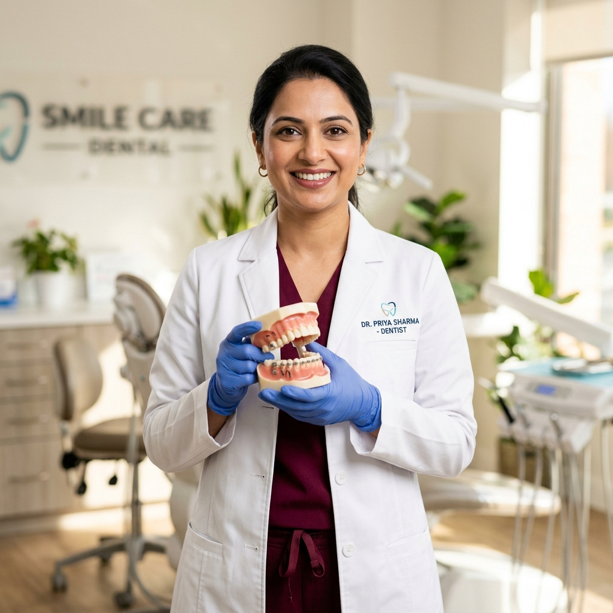

Expert management of wisdom tooth impactions, surgical extractions, and minor oral surgery with swift healing.

Oral and maxillofacial surgery requires an exceptional combination of clinical precision, detailed anatomical knowledge, and gentle patient handling. At Shri Krishna Dental Hospital, our surgical team prioritizes tooth preservation wherever possible, but when teeth become severely fractured, non-restorable, or painfully impacted, we perform atraumatic removals that preserve maximum surrounding bone.
From routine simple extractions to complex horizontally impacted wisdom teeth, surgical exposure of buried canines, frenectomies, and root-saving apicoectomies with bone grafts, your procedure is conducted in a strictly sterilized operatory under local anesthesia.
All surgical procedures adhere to hospital-grade sterilization protocols with single-use sterile disposables.
Routine removal of severely decayed, loose, or mobile teeth that cannot be restored. Performed atraumatically using specialized dental elevators with minimal bone stress.
Routine & PainlessIndicated for teeth broken off at the gumline, ankylosed roots, or curved roots. Involves gentle flap reflection, bone relief, and careful root retrieval to preserve ridge volume.
Complex Root RetrievalRemoval of problematic upper 3rd molars that cause cheek biting, food traps, sinus pressure, or decay due to inaccessible cleaning angles in the maxillary arch.
Maxillary 3rd MolarSpecialized surgical removal of impacted mandibular 3rd molars (mesial, horizontal, or vertical impactions). Relieves recurrent pericoronitis and protects neighboring second molars.
Mandibular ImpactionCareful removal of deeply buried or ectopic canines and premolars that cannot be realigned orthodontically or are causing root resorption of adjacent sound teeth.
Specialized ImpactionUncovering an unerupted, impacted tooth (such as a maxillary canine) under the gums and attaching an orthodontic bracket with gold chain for guided traction into the dental arch.
Orthodontic Surgical AidSurgical or laser release of a restrictive labial frenum (causing midline gap / diastema) or lingual frenum (ankyloglossia / tongue-tie in children and adults) for speech and bite freedom.
Soft Tissue ReleaseMicrosurgical excision of the infected tip of a tooth root and surrounding periapical cyst where standard root canal retreatment cannot resolve the persistent infection.
Root-Saving SurgeryAdvanced apical surgery combining root-end resection with biocompatible retrograde filling (MTA) and bone graft placement to rapidly regenerate cortical bone in large periapical bone lesions.
Regenerative SurgeryOur surgeons provide clear, printed post-operative instructions along with medication to ensure a fast, painless recovery:
Bite firmly on the sterile gauze pack for 45 minutes. Avoid spitting, smoking, or drinking through straws to protect the blood clot.
Apply cold compress ice packs intermittently to the cheek during the first 24 hours. Eat soft, cool foods like yogurt, smoothies, and ice cream.
Beginning on Day 2, gently rinse with warm saline water 3–4 times daily after meals to keep the surgical site clean and promote healing.
Take antibiotics and analgesics strictly as advised by your surgeon to eliminate pain and prevent secondary infection.
Suffering from wisdom tooth pain or need a tooth removed safely? Connect with our oral surgery department today.
Book Appointment Online Emergency Call: +91 95154 25522